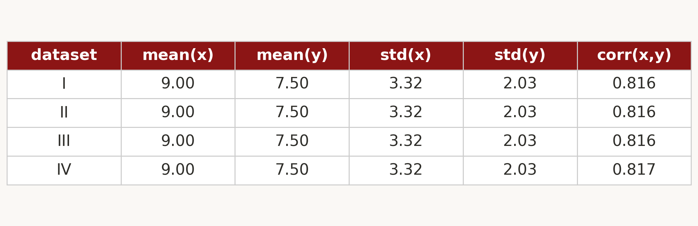
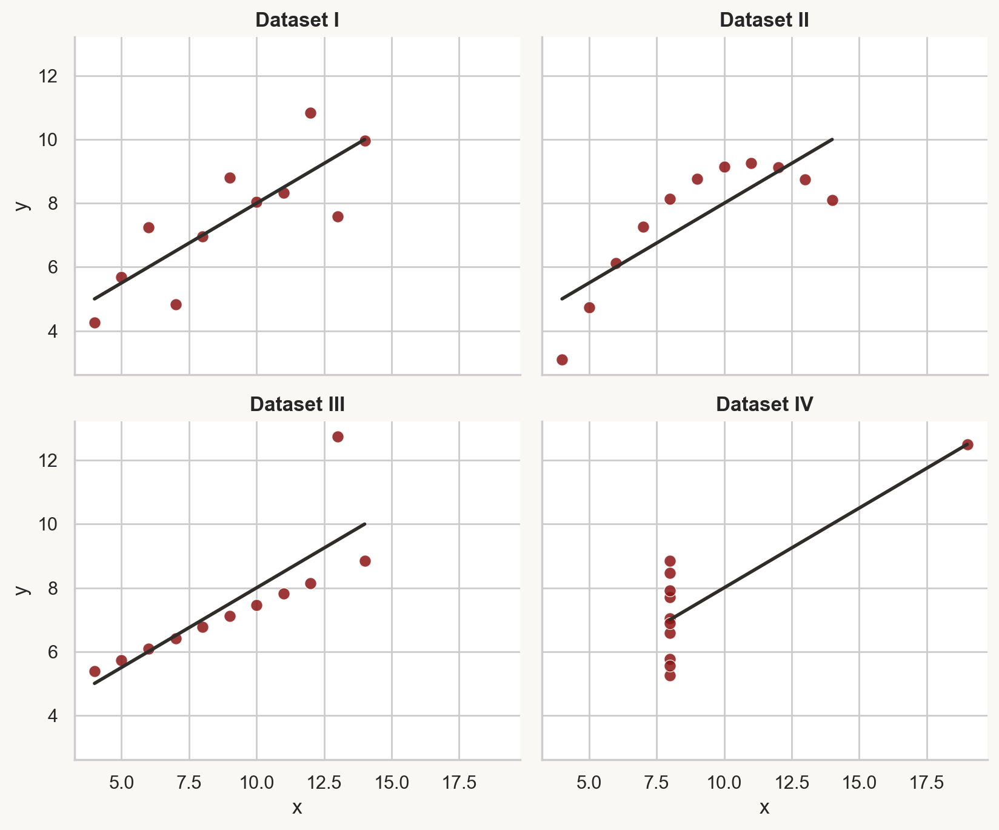
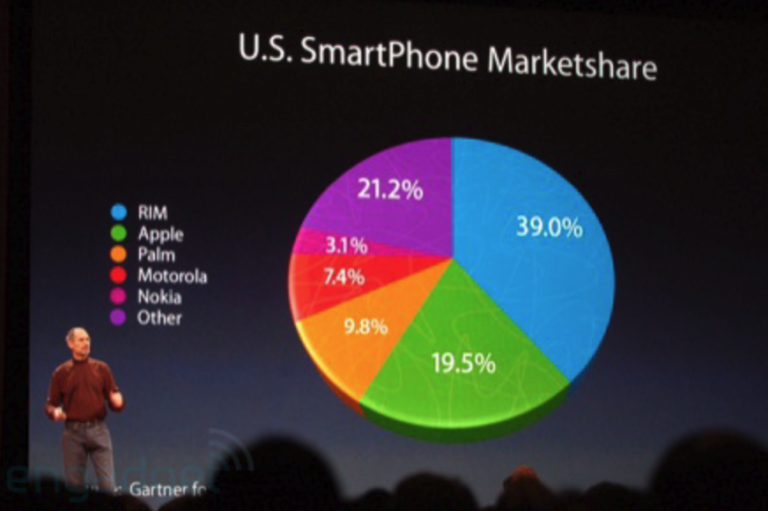
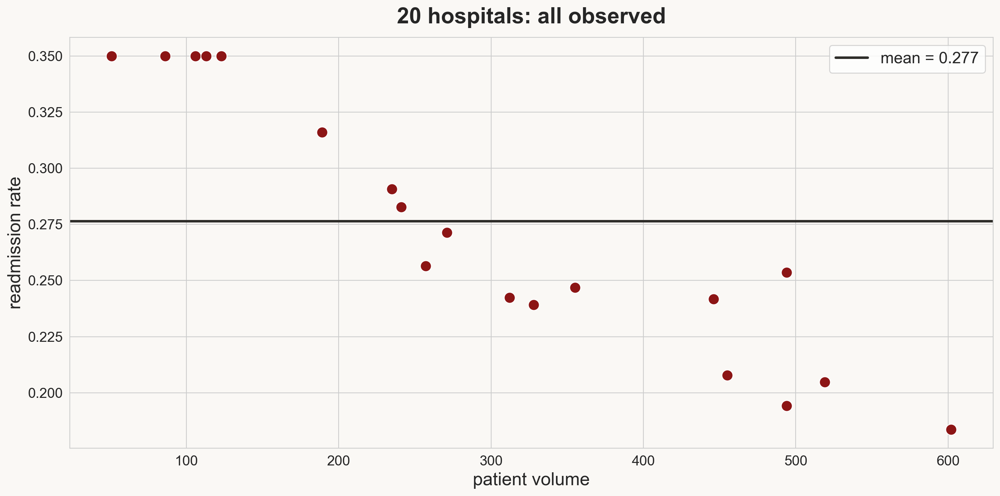
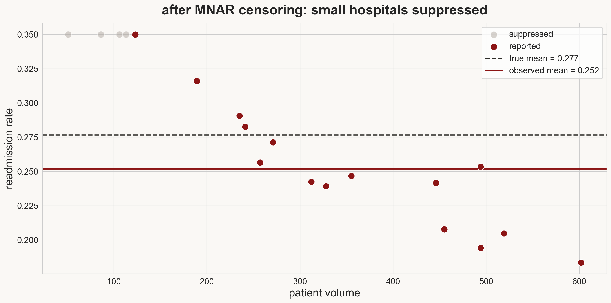
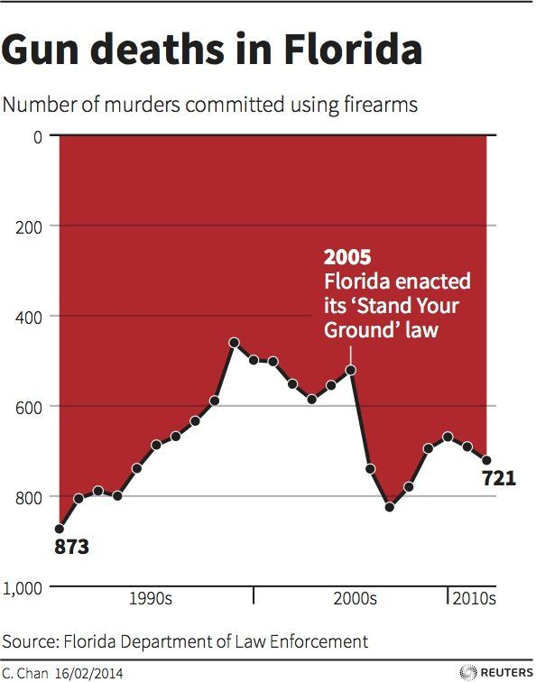
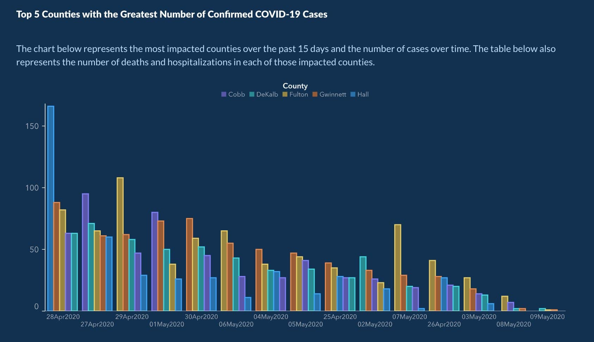

Lecture 2: EDA & visualization
Applied Statistics: From Data to Decisions
Wednesday, April 1, 2026
the perils of summary statistics

four datasets. identical mean, SD, correlation, regression line.
so they must look the same, right?

same stats, different graphs

Matejka & Fitzmaurice, “Same Stats, Different Graphs” (Autodesk Research, 2017)
always look at your data
today: the EDA workflow
- first look: shape, types, first impressions
- distributions: what does each variable look like?
- relationships: how do variables relate?
- categorical comparisons: groups and compositions
- missing data: how much? any patterns?
- confounding: when associations mislead
four modes of statistics
- summary: describe the data (today)
- prediction: forecast new values
- inference: quantify uncertainty
- causation: establish cause and effect
today we focus on summary — what’s in the data, and what traps are hiding in it
part 1: first look at the data
the dataset: NYC Airbnb
29,142 listings from Inside Airbnb — every active rental in New York City
you’re a traveler trying to find a good deal. where do you start?
Demo: first look at Airbnb data
what the demo showed
- 29,142 rows, 96 columns → selected 11
dtypes: mix of int64, float64, object.describe()count row: some columns have fewer entries — missing data
six semantic types: continuous, discrete, nominal, ordinal, text, identifier
part 2: distributions
Demo: price distribution
what does “typical” mean?
the histogram tells a different story
dramatic right skew — long tail to $999/night
- most listings: $50–$200
- a few listings: $500+
which single number represents a “typical” listing?
mean vs. median
mean
\(\bar{x} = \frac{1}{n}\sum_{i=1}^n x_i\)
- the arithmetic average
- sensitive to extreme values
median
the middle value when sorted
- half below, half above
- barely affected by outliers
which summary do you trust?
the mean is $133. the median is $100.
if you price your listing at the mean, roughly what fraction of listings are cheaper than yours?
well over half — the right tail pulls the mean above most of the data
quartiles and IQR
quartiles
divide sorted data into four equal parts
- Q1 (25th percentile), Q2 (median), Q3 (75th percentile)
interquartile range (IQR)
Q3 − Q1 — the width of the middle 50%. a robust measure of spread.
for Airbnb prices: Q1 = $67, Q3 = $165, IQR = $98
same data, different lens
raw scale
histogram bunched at left, invisible tail
mean pulled far from center
log scale
roughly symmetric
structure in the tail becomes visible
use a log axis to look at skewed data; log transform to model it
part 3: relationships between variables
I’m about to plot price (log scale, y-axis) vs. number of guests (x-axis)
- sketch what you expect
- does each additional guest add a fixed dollar amount, or multiply the price?
- does the spread stay constant or grow?
1 min sketch or discuss. then I’ll reveal the plot.
Demo: scatter plots and 2D histograms
when scatter plots fail
29,000 points stacked on top of each other — you can’t see the pattern
2D histogram: bin both axes, color by count
- reveals that the overwhelming majority of listings are 1–4 guests at $50–$200
- the expensive outliers are rare, not representative
part 4: categorical variables
room types and boroughs
room types
- Entire home/apt: 15,022
- Private room: 13,469
- Shared room: 651
boroughs
- 5 boroughs, 212 neighborhoods
- Manhattan has the most listings
bar charts make these comparisons easy — pie charts don’t
how to lie like Steve Jobs

Demo: categorical comparisons
you’ve seen price distributions for the whole city
- predict: do entire homes or private rooms have higher median price?
- by how much? (2×? 5×? 10×?)
- does the spread differ?
30 sec think. 1 min pair. then I’ll show the box plot.
comparing compositions
three ways to show room type by borough:
- dodged bar chart → compare counts across room types
- stacked bar chart → see total listings per borough
- standardized bar chart → compare proportions
Manhattan has a higher proportion of entire homes than Brooklyn
what’s missing?
40% of security deposits are missing
11,827 out of 29,142 listings have no deposit listed
is that random, or does it mean something?
three patterns of missing data
MCAR (missing completely at random)
missingness has no pattern — unrelated to any variable
MAR (missing at random)
missingness depends on observed variables
MNAR (missing not at random)
missingness depends on the unobserved value itself — the most dangerous pattern
a host lists a $500/night apartment but doesn’t fill in the security deposit field
- is the deposit more likely to be high or low?
- does this look like MCAR, MAR, or MNAR?
- if we drop listings with missing deposits, what happens to our price statistics?
1 min think. 2 min pair. 1 min share.
MNAR in the wild: hospital readmissions


CMS suppresses hospitals with “too few” readmissions to report — the value itself determines whether you see it
association is not causation
Manhattan vs. Brooklyn
median price: Manhattan $135, Brooklyn $90
Manhattan is $45/night more expensive
but is that comparing like with like?
control for room type
| Manhattan | Brooklyn | gap | |
|---|---|---|---|
| Entire home | $180 | $140 | $40 |
| Private room | $85 | $62 | $23 |
| Shared room | $60 | $35 | $25 |
| Overall | $135 | $90 | $45 |
the overall gap ($45) exceeds every room-type gap ($23–$40)
the confounder
confounder
a variable that affects both the treatment and the outcome
- inflates (or deflates) the observed association beyond the true causal effect
room type drives both location distribution and price
Manhattan isn’t as much more expensive as it looks — room type is doing some of the work
students who attend office hours get higher grades
how much of the grade boost is from office hours, and how much from the kind of student who shows up?
motivation drives both OH attendance and studying — the raw correlation overstates the causal effect
how to lie with data
what’s wrong with each of these?

- y-axis is inverted — 0 at top, 1,000 at bottom
Reuters / C. Chan, 2014. Data: Florida Dept. of Law Enforcement

- dates are not in chronological order, but sorted by bar height to fake a downward trend
Georgia Dept. of Public Health, May 2020
takeaways
- EDA workflow: shape → types → distributions → relationships → missing data
- distributions reveal what summaries hide: always plot; use log scale for heavy tails
- missing data tells a story: ask why before dropping rows
- an association can be real without being causal: confounders inflate observed effects
next time
we can describe and diagnose the data
how do we clean it? what do we do with missing values, wrong types, messy text?
before next class
- read Chapter 2 in the course notes
- try the notebook exercises on your own
- HW 1 due next week
one-minute feedback
- what was the most useful thing you learned today?
- what was the most confusing?